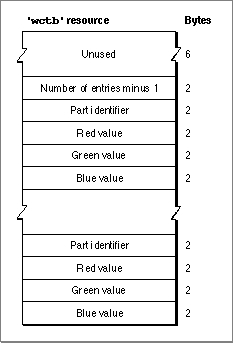

The Window Color Table Resource
You can specify your own window color tables as resources of type'wctb'.Ordinarily, you should not define your own window color tables, unless you have some extraordinary need to control the color of a window's frame or text highlighting. To assign a table to a window when you create the window, provide a window color table (
'wctb') resource with the same resource ID as the'WIND'resource from which you create the window.The window color table resource is an exact image of the window color table data structure. Figure 4-25 illustrates the contents of a compiled
'wctb'resource.Figure 4-25 Structure of a compiled window color table (
'wctb') resource
A compiled version of a window resource contains the following elements:
- An unused field 6 bytes long.
- An integer that specifies the number of entries in the resource (that is, the number of color specification records) minus 1.
- A series of color specification records, each of which consists of a 2-byte part identifier and three 2-byte color values. The part identifier is an integer specified by one of
these constants:CONST wContentColor = 0; {content region background} wFrameColor = 1; {window frame} wTextColor = 2; {window title and button text} wHiliteColor = 3; {reserved} wTitleBarColor = 4; {reserved} wHiliteColorLight = 5; {lightest stripes in title bar } { and lightest dimmed text} wHiliteColorDark = 6; {darkest stripes in title bar } { and darkest dimmed text} wTitleBarLight = 7; {lightest parts of title bar } { background} wTitleBarDark = 8; {darkest parts of title bar } { background} wDialogLight = 9; {lightest element of dialog box } { frame} wDialogDark = 10; {darkest element of dialog box } { frame} wTingeLight = 11; {lightest window tinging} wTingeDark = 12; {darkest window tinging}The color values are simply the intensity of the red, green, and blue in each window part (see Inside Macintosh: Imaging for a description of RGB color).